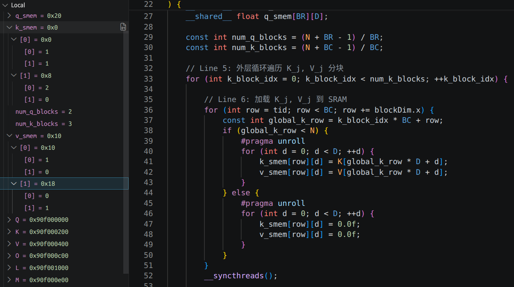
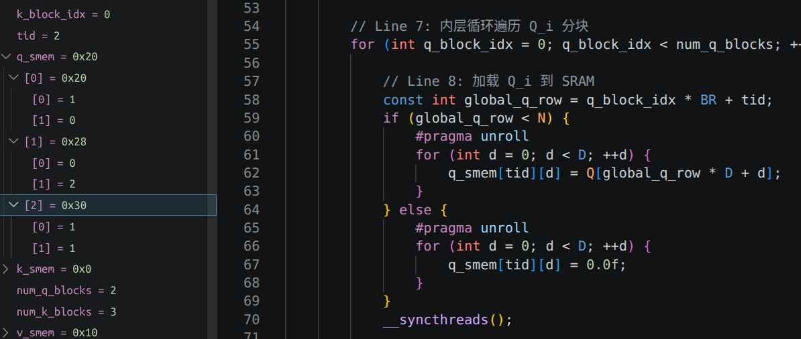
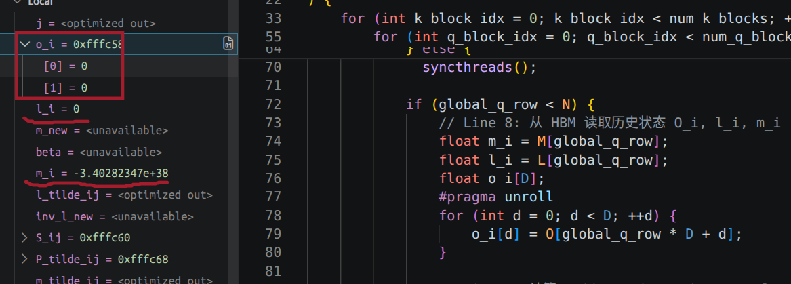
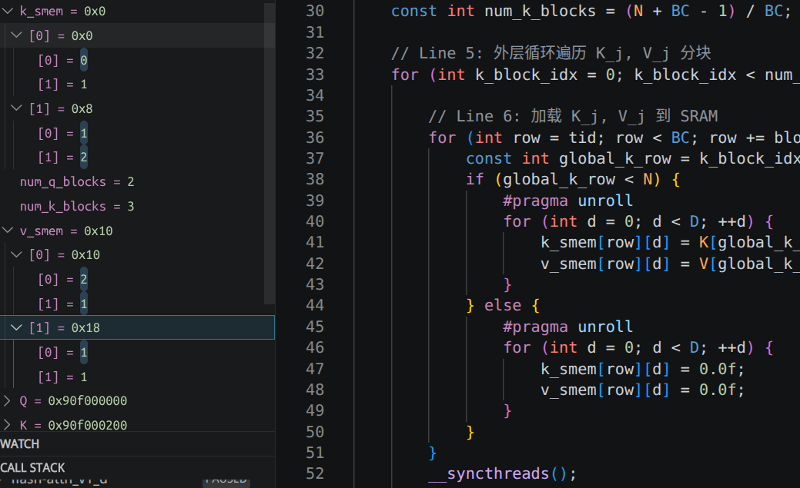
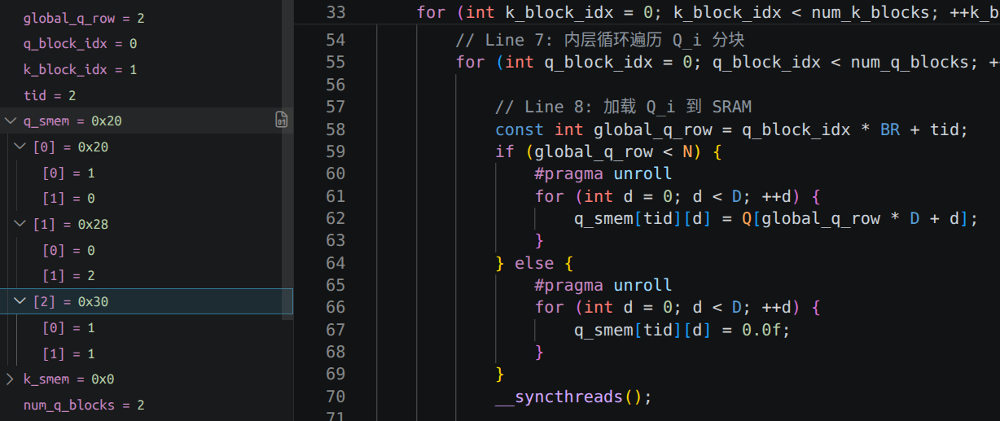
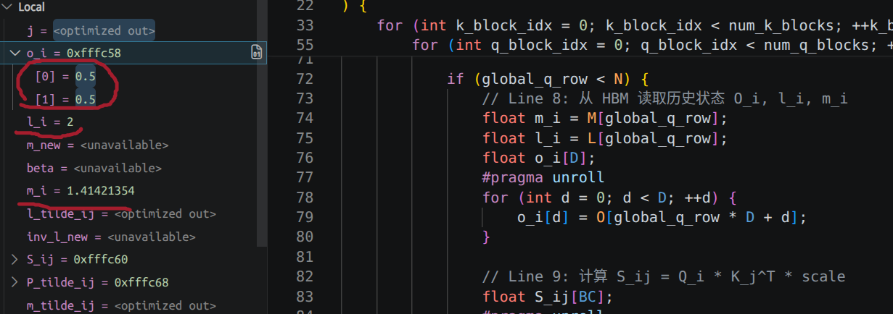
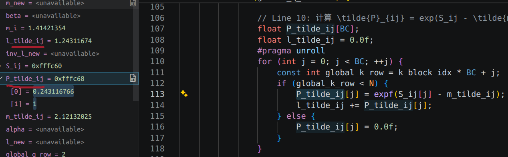

3.4 用CUDA实现FlashAttention V1
用CUDA实现FlashAttention V1¶
学习目标¶
- 理解FlashAttention V1的调试算法
- 学习代码flash-attn_v1_debug.cu
1. 回顾¶
到目前为止，我们已经学习了Softmax，包括分块的Online的Softmax。同时我们上一节也学习了没有Softmax的FlashAttention算法，包括模拟FlashAttention V1和FlashAttention V2的两个版本的flash_attn_no_softmax。那么这一节，我们就会把这两部分知识结合起来，实现完整的FlashAttention V1。
我们再来看一下FlashAttnetion V1的算法流程：

把它和上一节的flash_attn_no_softmax对比，可以发现，大的逻辑结构完全一样，也是两层循环。只不过在上一节里，我们计算了S_{ij}之后，直接就用它来乘以V了。真正的FlashAttention V1，需要对它先求局部(截止到当前行所有数据)最大值，然后用这个局部最大值计算Softmax，并且计算O的时候，需要对之前的O进行修正。因此对flash_attn_no_softmax的主要修改就是上面的第10~12行。
这个算法的正确性在第二节已经有非常形式化的证明。这里我们再快速的复习一下。
下面对照图中的算法伪代码，逐步推导其数学正确性：
1.1. 标准 Attention 的数学定义¶
对于输入矩阵 Q, K, V \in \mathbb{R}^{N \times d}，标准的 Attention 输出 O 定义为：
为了简化推导（省略缩放因子 \frac{1}{\sqrt{d}} 或将其吸收入 Q, K），令注意力得分矩阵 S = QK^T \in \mathbb{R}^{N \times N}。 对于输出矩阵 O 的第 i 行（或 Q 的第 i 个分块 Q_i），其标准的行向量计算公式为：
其中 m_i = \max_j S_{ij} 是为了数值稳定性引入的行最大值。
1.2. Online Softmax 的分块递推原理¶
由于 K 和 V 被划分为 T_c 个块 (K_1, \dots, K_{T_c} 和 V_1, \dots, V_{T_c})，当算法遍历到第 j 个 K, V 块时，我们需要将新计算出的贡献与前面 1 \to j-1 轮累积的结果进行合并。
定义以下中间变量（对应图中算法）：
- m_{i}^{(j)}：截至第 j 轮块，第 i 行的局部最大值：
其中 \tilde{m}_{ij} = \text{rowmax}(Q_i K_j^T) 是当前块 j 的行最大值（图第 10 行）。
- l_i^{(j)}：截至第 j 轮块的分母累加项（Sum of Exponentials）：
其中 \tilde{l}_{ij} = \text{rowsum}(\exp(S_{ij} - \tilde{m}_{ij})) 是当前块的指数和（图第 10-11 行）。
1.3. 输出矩阵 O_i 的分块更新推导（对应图第 12 行）¶
设第 j-1 轮累积的未归一化分子为 \tilde{O}_i^{(j-1)} = diag(l_i^{(j-1)}) O_i^{(j-1)}。 当引入第 j 个块时，新的未归一化分子为：
其中 \tilde{P}_{ij} = \exp(S_{ij} - \tilde{m}_{ij})。
最终的输出 O_i^{(j)} 需要除以更新后的总分母 l_i^{(j)}：
这正是图第 12 行写回公式的数学原型：
1.4. 结论¶
通过上述递推，FlashAttention v1 在 外层循环遍历 K, V 块、内层循环遍历 Q 块 的流动过程中，利用指数函数的代数性质，在片上实时修正了由于分块导致“全局最大值 m_i 动态变化”所带来的缩放误差。数学上严格保证了分块流式计算的结果与全局一次性计算的 \text{softmax}(QK^T)V 完全等价。
2. 内核启动代码¶
我们首先来看启动内核的代码，重点分析启动多少个线程块，每个线程块多少线程。
torch::Tensor flash_attn_forward_v1(torch::Tensor Q, torch::Tensor K, torch::Tensor V) {
const int N = Q.size(0);
const int d = Q.size(1);
auto O = torch::zeros_like(Q);
// 在 HBM 中初始化 m_i = -inf, l_i = 0
auto M = torch::full({N}, -FLT_MAX, Q.options());
auto L = torch::zeros({N}, Q.options());
const int grid_size = 1; // FA-1 Alg1 架构下必须单 Block 顺序迭代，保证 HBM O_i 的写安全
const int block_size = BR; // 线程数与 BR 对齐
const float softmax_scale = 1.0f / std::sqrt(static_cast<float>(D));
cudaStream_t stream = c10::cuda::getCurrentCUDAStream();
flash_attn_v1<<<grid_size, block_size, 0, stream>>>(
Q.data_ptr<float>(),
K.data_ptr<float>(),
V.data_ptr<float>(),
O.data_ptr<float>(),
L.data_ptr<float>(),
M.data_ptr<float>(),
N,
softmax_scale
);
return O;
}
和flash-attn-no-softmax_v0_debug.cu类似，我们启动1个线程块，每个线程块BR(B_r)个线程。除此之外，这里还多了两个向量：M和L。它们分别用来存储每行的最大值以及每行的归一化因子。另外还提前计算好了softmax_scale，它的值是1/\sqrt{D}。把除以一个数变成乘以它的倒数也是非常常见的小技巧，因为计算机计算乘法的速度要比除法快。
和上一节的方法一样，我们还是通过调试代码的方式按照模块讲解代码。完整的代码在：flash-attn-cpp/flash-attn_v1_debug.cu。
3. 准备工作¶
const int tid = threadIdx.x; // blockDim.x = BR = 3
__shared__ float k_smem[BC][D];
__shared__ float v_smem[BC][D];
__shared__ float q_smem[BR][D];
const int num_q_blocks = (N + BR - 1) / BR;
const int num_k_blocks = (N + BC - 1) / BC;
代码首先拿到当前线程在进程块内的编号，这里我们跟踪第3个线程，所以我设置了条件断点(threadIdx.x==2)。
在文件开头用宏定义（BR = 3, BC = 2, D = 2），下面是变量的详细解释：
const int tid = threadIdx.x; // blockDim.x = BR = 3获取当前线程在 Thread Block 内的索引（tid范围为 0 到 2）。 线程块的总线程数blockDim.x等于BR，即共有 3 个线程协同工作。__shared__ float k_smem[BC][D];在共享内存中声明一个大小为 2 \times 2（共 4 个float）的二维数组，用于缓存 Key 矩阵的一个分块。其中行数为BC = 2，列数（Head 维度）为D = 2。__shared__ float v_smem[BC][D];在共享内存中声明一个大小为 2 \times 2（共 4 个float）的二维数组，用于缓存 Value 矩阵的一个分块，维度与k_smem相同。__shared__ float q_smem[BR][D];在共享内存中声明一个大小为 3 \times 2（共 6 个float）的二维数组，用于缓存 Query 矩阵的一个分块。其中行数为BR = 3（对应 3 个线程），列数为D = 2。const int num_q_blocks = (N + BR - 1) / BR;计算当序列长度为 N、Query 块大小为BR = 3时，总共需要划分的 Query 块数量。实际计算公式为 \lceil N / 3 \rceil（向上取整）。const int num_k_blocks = (N + BC - 1) / BC;计算当序列长度为 N、Key/Value 块大小为BC = 2时，总共需要划分的 K/V 块数量。实际计算公式为 \lceil N / 2 \rceil（向上取整）。
4. 外层循环¶
// Line 5: 外层循环遍历 K_j, V_j 分块
for (int k_block_idx = 0; k_block_idx < num_k_blocks; ++k_block_idx) {
这个和上一节完全相同，我们的外层循环是遍历K和V的分块。
5. 加载K和V的分块到共享内存¶
// Line 6: 加载 K_j, V_j 到 SRAM
for (int row = tid; row < BC; row += blockDim.x) {
const int global_k_row = k_block_idx * BC + row;
if (global_k_row < N) {
#pragma unroll
for (int d = 0; d < D; ++d) {
k_smem[row][d] = K[global_k_row * D + d];
v_smem[row][d] = V[global_k_row * D + d];
}
} else {
#pragma unroll
for (int d = 0; d < D; ++d) {
k_smem[row][d] = 0.0f;
v_smem[row][d] = 0.0f;
}
}
}
__syncthreads();
这部分代码也是完全相同，执行的结果为：

6. 内层循环以及加载Q块¶
for (int q_block_idx = 0; q_block_idx < num_q_blocks; ++q_block_idx) {
// Line 8: 加载 Q_i 到 SRAM
const int global_q_row = q_block_idx * BR + tid;
if (global_q_row < N) {
#pragma unroll
for (int d = 0; d < D; ++d) {
q_smem[tid][d] = Q[global_q_row * D + d];
}
} else {
#pragma unroll
for (int d = 0; d < D; ++d) {
q_smem[tid][d] = 0.0f;
}
}
__syncthreads();
这部分代码和之前也完全相同，第一次内部循环的执行结果为：

7. 从HBM加载O,m和l¶
// Line 8: 从 HBM 读取历史状态 O_i, l_i, m_i
float m_i = M[global_q_row];
float l_i = L[global_q_row];
float o_i[D];
#pragma unroll
for (int d = 0; d < D; ++d) {
o_i[d] = O[global_q_row * D + d];
}
和上一节的代码相比，需要多加载m_i和l_i。注意：我们这里看到的是一个线程，所以它只加载对应行(global_q_row=2)的最大值和归一化因子。因为还是第一次外部循环，所以m_i是初始化的负无穷，而l_i等于0。最终的执行结果如下图：

8. 计算S_{ij}¶
// Line 9: 计算 S_ij = Q_i * K_j^T * scale
float S_ij[BC];
#pragma unroll
for (int j = 0; j < BC; ++j) {
const int global_k_row = k_block_idx * BC + j;
if (global_k_row < N) {
float score = 0.0f;
#pragma unroll
for (int d = 0; d < D; ++d) {
score += q_smem[tid][d] * k_smem[j][d];
}
S_ij[j] = score * softmax_scale;
} else {
S_ij[j] = -FLT_MAX;
}
}
详细计算过程如下：
8.1. 当前数据¶
tid:2q_smem[2]:[1, 1]k_smem:k_smem[0] = [1, 1]（对应j = 0）k_smem[1] = [2, 0]（对应j = 1）
- 其它参数:
k_block_idx = 0,N = 6,BC = 2,softmax_scale = 0.707106769
8.2. 执行计算过程¶
声明 float S_ij[2];，开始循环 j 从 0 到 1：
-
当
j = 0时：- 全局行号：
global_k_row = 0 * 2 + 0 = 0。 - 边界检查：
0 < 6成立。 - 点积计算：\text{score} = 1.0 \times 1.0 + 1.0 \times 1.0 = 2.0
- 应用缩放：S\_ij[0] = 2.0 \times 0.707106769 \approx 1.4142135
- 全局行号：
- 当
j = 1时：- 全局行号：
global_k_row = 0 * 2 + 1 = 1。 - 边界检查：
1 < 6成立。 - 点积计算：\text{score} = 1.0 \times 2.0 + 1.0 \times 0.0 = 2.0
- 应用缩放：S\_ij[1] = 2.0 \times 0.707106769 \approx 1.4142135
- 全局行号：
8.3. 最终结果¶
当 tid == 2 且参数更新后，计算得到的 S_ij 数组为：S_ij = [1.4142135f, 1.4142135f]
8.4 避免越界¶
S_ij[j] = -FLT_MAX;
这一行代码的主要作用是 处理越界（Out-of-Bounds）的键值，并将其在 Softsoftmax 归一化中的权重归零。
在 FlashAttention 等分块计算中，矩阵的维度 N（序列长度）通常不能被块大小 BC 整除，导致最后一个块可能会超出实际的序列长度。
具体细节如下：
- 边界保护：代码通过
const int global_k_row = k_block_idx * BC + j;计算当前元素在全局序列中的真实索引。如果global_k_row >= N，说明这个位置是因分块填充（Padding）而产生的虚拟数据，并不属于真实的有效序列。 - 屏蔽无效计算：将
S_ij[j]设为-FLT_MAX（即浮点数的负无穷大，约 -3.4 \times 10^{38}），在后续执行exp(S_ij[j] - m_i)时，\exp(-\infty) 的结果会趋近于 0。 - 避免污染结果：通过这种方式，越界的多余元素对最终的 Attention 权重和输出结果不会产生任何实际贡献，从而保证了计算结果的数学正确性。
9. 计算rowmax¶
float m_tilde_ij = -FLT_MAX;
#pragma unroll
for (int j = 0; j < BC; ++j) {
m_tilde_ij = fmaxf(m_tilde_ij, S_ij[j]);
}
计算当前块中S_{ij}的最大值，显然结果是1.41421354。
10. 计算\tilde{P}_{ij}以及\tilde{\ell}_{ij}¶
接下来就是计算 \tilde{P}_{ij} = exp(S_{ij} - \tilde{m}_{ij}) 及 \tilde{\ell}_{ij} = rowsum(\tilde{P}_{ij})，代码如下：
float P_tilde_ij[BC];
float l_tilde_ij = 0.0f;
#pragma unroll
for (int j = 0; j < BC; ++j) {
const int global_k_row = k_block_idx * BC + j;
if (global_k_row < N) {
P_tilde_ij[j] = expf(S_ij[j] - m_tilde_ij);
l_tilde_ij += P_tilde_ij[j];
} else {
P_tilde_ij[j] = 0.0f;
}
}
执行该段代码的计算步骤如下：
10.1. 执行循环计算¶
- 当
j = 0时：- 全局行号：
global_k_row = 0 * 2 + 0 = 0。 - 边界检查：
0 < 6成立。 - 计算指数项：P\_tilde\_ij[0] = \text{expf}(S\_ij[0] - m\_tilde\_ij) = \text{expf}(1.4142135f - 1.41421354f) = 1.0f
- 累加到分母：l\_tilde\_ij = 0.0f + 1.0f = 1.0f
- 全局行号：
- 当
j = 1时：- 全局行号：
global_k_row = 0 * 2 + 1 = 1。 - 边界检查：
1 < 6成立。 - 计算指数项：P\_tilde\_ij[1] = \text{expf}(S\_ij[1] - m\_tilde\_ij) = \text{expf}(1.4142135f - 1.41421354f) = 1.0f
- 累加到分母：l\_tilde\_ij = 1.0f + 1.0f = 2.0f
- 全局行号：
10.2. 最终输出结果¶
P_tilde_ij = [1.0f, 1.0f]l_tilde_ij = 2.0f
10.3. 边界条件¶
if (global_k_row < N) {
P_tilde_ij[j] = expf(S_ij[j] - m_tilde_ij);
l_tilde_ij += P_tilde_ij[j];
} else {
P_tilde_ij[j] = 0.0f;
}
其实这里也可以不判断条件，因为我们之前已经把越界的S_ij设置为-FLT_MAX了。因此expf(-FLT_MAX - m_tilde_ij)=0，这和else分支的效果是相同的。
11. 更新最大值¶
// Line 11: 计算 m_i^{new} 与 \ell_i^{new}
float m_new = fmaxf(m_i, m_tilde_ij);
执行结束后m_new=1.41421354。
12. 计算l_new¶
计算\ell_i^{new}的公式为：
为了复用，我们先计算e^{m_i - m_{new}}并保存这个缩放因子到变量alpha，然后计算e^{\tilde{m}_{ij} - m_{new}}并保存到beta，最后在计算l_new。代码如下：
// \ell_i^{new} = e^{m_i - m_new} * \ell_i + e^{\tilde{m}_{ij} - m_new} * \tilde{\ell}_{ij}
float alpha = expf(m_i - m_new);
float beta = expf(m_tilde_ij - m_new);
float l_new = alpha * l_i + beta * l_tilde_ij;
代码执行过程如下：
1. 计算缩放系数 alpha：
由于指数输入是一个极小的负数（负无穷大），expf 会发生下溢（Underflow），结果为：
2. 计算缩放系数 beta：
3. 计算更新后的全局归一化分母 l_new：
最终输出结果
alpha= 0.0fbeta= 1.0fl_new= 2.0f
13. 计算O_i^{new}¶
#pragma unroll
for (int d = 0; d < D; ++d) {
float p_v = 0.0f;
#pragma unroll
for (int j = 0; j < BC; ++j) {
const int global_k_row = k_block_idx * BC + j;
if (global_k_row < N) {
p_v += P_tilde_ij[j] * v_smem[j][d];
}
}
// 核心点：当前迭代直接进行归一化（乘以 inv_l_new）
float num = (l_i * alpha) * o_i[d] + beta * p_v;
o_i[d] = num * inv_l_new;
}
13.1 执行过程¶
13.1.1. 当前已知数据与变量状态¶
- 维度与索引：
D = 2,BC = 2,N = 6,k_block_idx = 0tid = 2
- 前一轮累积与缩放系数：
m_i = -FLT_MAX（初始状态，对应前一轮无有效数据）l_i = 0.0falpha = 0.0fbeta = 1.0fm_new = 1.41421354fl_new = 2.0f\rightarrow 设其倒数inv_l_new = 1.0f / 2.0f = 0.5f
- 当前块权重：
P_tilde_ij = [1.0f, 1.0f]（来自前面m_tilde_ij = 1.41421354f时的计算）
v_smem矩阵内容：v_smem[0][0] = 1,v_smem[0][1] = 0（对应j = 0）v_smem[1][0] = 0,v_smem[1][1] = 1（对应j = 1）
- 输出寄存器原值：
o_i[0] = 0.0f,o_i[1] = 0.0f
13.1.2. 逐维度模拟执行外层循环 (d 从 0 到 1)¶
13.1.2.1 当 d = 0 时：¶
- 初始化
p_v = 0.0f。 -
内层循环
j遍历：j = 0:global_k_row = 0 * 2 + 0 = 0 < 6（成立）。p_v += P_tilde_ij[0] * v_smem[0][0]\rightarrow0.0f + 1.0f * 1.0f = 1.0f。
j = 1:global_k_row = 0 * 2 + 1 = 1 < 6（成立）。p_v += P_tilde_ij[1] * v_smem[1][0]\rightarrow1.0f + 1.0f * 0.0f = 1.0f。
- 内层结束，
p_v = 1.0f。
-
计算分子
num：num = (l_i * alpha) * o_i[0] + beta * p_vnum = (0.0f * 0.0f) * 0.0f + 1.0f * 1.0f = 1.0f
-
归一化并更新
o_i[0]：o_i[0] = num * inv_l_new = 1.0f * 0.5f = 0.5f
13.1.2.2 当 d = 1 时：¶
- 初始化
p_v = 0.0f。 -
内层循环
j遍历：j = 0:global_k_row = 0 < 6（成立）。p_v += P_tilde_ij[0] * v_smem[0][1]\rightarrow0.0f + 1.0f * 0.0f = 0.0f。
j = 1:global_k_row = 1 < 6（成立）。p_v += P_tilde_ij[1] * v_smem[1][1]\rightarrow0.0f + 1.0f * 1.0f = 1.0f。
- 内层结束，
p_v = 1.0f。
-
计算分子
num：num = (l_i * alpha) * o_i[1] + beta * p_vnum = (0.0f * 0.0f) * 0.0f + 1.0f * 1.0f = 1.0f
-
归一化并更新
o_i[1]：o_i[1] = num * inv_l_new = 1.0f * 0.5f = 0.5f
13.1.3. 最终输出结果¶
代码执行完毕后，当前线程 (tid == 2) 的输出向量更新为：
o_i = [0.5f, 0.5f]
13.2 优化点¶
const int global_k_row = k_block_idx * BC + j;
if (global_k_row < N) {
p_v += P_tilde_ij[j] * v_smem[j][d];
}
因为如果越界，P_tilde_ij=0，所以global_k_row的计算和if条件是可以去掉的。
13.3 和上一节的区别¶
注意，上一节的代码，我们是内部对K和V进行遍历，最里面是遍历向量的维度D，而这里反过来了。如果内外循环对调，那么代码应该如下：
// 1. 声明一个大小为 D 的临时数组，用于在寄存器中暂存当前块对各个维度的贡献
float block_v[D] = {0.0f};
// 2. 外层循环遍历 BC (Key 块大小)
#pragma unroll
for (int j = 0; j < BC; ++j) {
const int global_k_row = k_block_idx * BC + j;
if (global_k_row < N) {
float p_scale = P_tilde_ij[j];
// 3. 内层循环遍历 D (Head 维度)
#pragma unroll
for (int d = 0; d < D; ++d) {
block_v[d] += p_scale * v_smem[j][d];
}
}
}
// 4. 计算完成后，统一更新历史数据并进行归一化
#pragma unroll
for (int d = 0; d < D; ++d) {
float num = (l_i * alpha) * o_i[d] + beta * block_v[d];
o_i[d] = num * inv_l_new;
}
我们还是来看执行过程，这样可以对比为什么这种方法需要block_v数组。
13.3.1 声明并初始化临时寄存器数组¶
float block_v[2] = {0.0f, 0.0f};
13.3.2 外层循环遍历 j（从 0 到 1）¶
- 当
j = 0时：global_k_row = 0 * 2 + 0 = 0 < 6（成立）。p_scale = P_tilde_ij[0] = 1.0f。- 内层循环遍历
d（从 0 到 1）：d = 0:block_v[0] += 1.0f * v_smem[0][0]\rightarrow0.0f + 1.0f * 1.0f = 1.0fd = 1:block_v[1] += 1.0f * v_smem[0][1]\rightarrow0.0f + 1.0f * 0.0f = 0.0f
- 此时
block_v = [1.0f, 0.0f]。
- 当
j = 1时：global_k_row = 0 * 2 + 1 = 1 < 6（成立）。p_scale = P_tilde_ij[1] = 1.0f。- 内层循环遍历
d（从 0 到 1）：d = 0:block_v[0] += 1.0f * v_smem[1][0]\rightarrow1.0f + 1.0f * 0.0f = 1.0fd = 1:block_v[1] += 1.0f * v_smem[1][1]\rightarrow0.0f + 1.0f * 1.0f = 1.0f
- 此时
block_v = [1.0f, 1.0f]。
13.3.3 统一更新历史数据并归一化（遍历 d 从 0 到 1）¶
- 当
d = 0时：num = (l_i * alpha) * o_i[0] + beta * block_v[0]num = (0.0f * 0.0f) * 0.0f + 1.0f * 1.0f = 1.0fo_i[0] = num * inv_l_new = 1.0f * 0.5f = 0.5f
- 当
d = 1时：num = (l_i * alpha) * o_i[1] + beta * block_v[1]num = (0.0f * 0.0f) * 0.0f + 1.0f * 1.0f = 1.0fo_i[1] = num * inv_l_new = 1.0f * 0.5f = 0.5f
13.4 对比¶
我们要计算的是：
先不考虑归一化(乘以inv_l_new)，则我们要计算的可以分解为如下几部分：
- \ell_i * e^{m_i - m_{new}}
- 对应到代码就是
l_i * alpha，
- 对应到代码就是
- e^{\tilde{m}_{ij} - m_{new}}
- 对应到代码就是
beta
- 对应到代码就是
- \tilde{P}_{ij} * V_j
- 它就是BC的循环，等于\tilde{P}_{i0} * V_0 + \tilde{P}_{i1} * V_1
- 对于具体某个维度
d，它等于\tilde{P}_{i0} * V_0[d] + \tilde{P}_{i1} * V_1[d]
如果我们外层循环是遍历d，那么内部就可以直接把某个维度的p_v全部计算出来，对应到代码就是：
float p_v = 0.0f;
#pragma unroll
for (int j = 0; j < BC; ++j) {
const int global_k_row = k_block_idx * BC + j;
if (global_k_row < N) {
p_v += P_tilde_ij[j] * v_smem[j][d];
}
}
处理完成某个维度d之后就可以直接计算这个维度的o_i[d]了：
float num = (l_i * alpha) * o_i[d] + beta * p_v;
它们的本质区别就是：
我们如果用等式左边的方法，就得用一个长度为d=3的数组保存中间向量，而用等式右边，我们每次处理d的一个维度，也就是一行。
13.5 这么实现的好处¶
将 d 放在外层、j 放在内层（，其核心优势主要体现在 极低的寄存器占用 和 更高的硬件并发度 上：
- 极低的寄存器压力（最低的寄存器占用）：
在当前写法中，内层循环累加的
p_v仅仅是一个 单精度标量（Scalar）。线程在处理完当前维度d后，就会用这个p_v去更新o_i[d]，随后这个变量在下一个d的循环中可以被直接复用。 相比之下，如果把j放在外层、d放在内层，为了同时记录所有维度的累加结果，代码必须在寄存器中开辟一个大小为D的数组（如float block_v[D]）。当D较大（例如 64 或 128）时，这会消耗大量宝贵的寄存器资源。 - 避免寄存器溢出（Register Spilling）与高 Occupancy：
由于省去了维护大小为
D的数组，每个线程占用的寄存器数量被压到最低。这能有效防止寄存器溢出到显存（Spilling），并确保 GPU 的每个 Streaming Multiprocessor (SM) 上能够同时运行最大数量的线程块（高 Occupancy），从而更好掩盖访存延迟。
14. 写回O,m和l¶
到此为止，我们已经计算出了：
因为线程块有3个线程，我们第一次内部循环处理完成：
接下来我们就需要继续内部循环，处理接下来的3行。在进入下一个内部循环之前，我们首先需要把前3行计算的O,m和l写回HBM。
// Line 13: 将更新后的 O_i, \ell_i, m_i 写回 HBM
M[global_q_row] = m_new;
L[global_q_row] = l_new;
#pragma unroll
for (int d = 0; d < D; ++d) {
O[global_q_row * D + d] = o_i[d];
}
15. 第二次内部循环¶
接下来是第二次内部循环，处理O_3,O_4,O_5。因为我们主要关注第三行O_2的计算，我们直接快速跳过它。
16. 第二次外部循环¶
16.1 加载K和V的块¶
现在k_block_idx=1，所以加载的起始行是k_block_idx * BC：
const int global_k_row = k_block_idx * BC + row;
加载后的结果如下图所示：

16.2 内部循环的第一次执行¶
我们还是关注第3个线程，因为它负责处理O_2。
首先还是加载Q_0,Q_1,Q_2，和第一次加载是完全相同，结构如下：

16.3 加载O,m和l¶
这一次加载的正是之前我们写入的值，结果如下图：

16.4 计算S_{ij}¶
16.4.1. 逐个 j 计算点积 score¶
- 当
j = 0时（k_smem[0] = [0.0f, 1.0f]）：
乘以 scale：
- 当
j = 1时（k_smem[1] = [1.0f, 2.0f]）：
乘以 scale：
16.4.2. 最终输出结果¶
S_ij = [0.707106769f, 2.1213203f]
16.5 计算m_tilde_ij¶
非常简单，m_tilde_ij=2.12132025。
16.6 计算\tilde{P}_{ij} 和 \tilde{\ell}_{ij}¶
这个也非常简单，计算过程就省略了，结果如下图：

16.7 计算 m_i^{new} 与 \ell_i^{new}¶
16.7.1. 计算新的最大值 m_new¶
16.7.2. 计算缩放系数 alpha 与 beta¶
- 计算
alpha：
- 计算
beta：
16.7.3. 计算更新后的归一化分母 l_new¶
16.7.4 最终输出结果¶
m_new= 2.12132025falpha\approx 0.49306949fbeta= 1.0fl_new\approx 2.22925572f
16.8 计算O_i^{new}¶
16.8.1. 准备¶
- 归一化倒数
inv_l_new： 已知l_new = 2.22925572f，则：
16.8.2. 逐维度执行循环 (d 从 0 到 1)¶
16.8.2.1 当 d = 0 时：¶
- 初始化
p_v = 0.0f。 -
内层
j循环（BC = 2）：j = 0:global_k_row = 0 < 6\rightarrowp_v += P_tilde_ij[0] * v_smem[0][0]\rightarrow0.0f + 0.24311674f * 2.0f = 0.48623348fj = 1:global_k_row = 1 < 6\rightarrowp_v += P_tilde_ij[1] * v_smem[1][0]\rightarrow0.48623348f + 1.0f * 1.0f = 1.48623348f- 内层结束，
p_v = 1.48623348f。
-
计算分子
num：
- 归一化并更新
o_i[0]：
16.8.2.2 当 d = 1 时：¶
- 初始化
p_v = 0.0f。 -
内层
j循环（BC = 2）：j = 0:global_k_row = 0 < 6\rightarrowp_v += P_tilde_ij[0] * v_smem[0][1]\rightarrow0.0f + 0.24311674f * 1.0f = 0.24311674fj = 1:global_k_row = 1 < 6\rightarrowp_v += P_tilde_ij[1] * v_smem[1][1]\rightarrow0.24311674f + 1.0f * 1.0f = 1.24311674f- 内层结束，
p_v = 1.24311674f。
-
计算分子
num：
- 归一化并更新
o_i[1]：
16.8.3. 最终输出结果¶
经过当前块的在线更新后，输出向量更新为：
o_i = [0.88787687f, 0.7788169f]
16.9 结果写回HBM¶
把当前的m_new=2.12132025，l_new=2.22925425和o_i写回HBM。
17. 第二次外部循环的第二次内部循环¶
这个也是计算O_3,O_4,O_5。我们跳过
18. 第三次外部循环¶
这次执行后，所有的代码就执行完成，我们也得到了最终的计算结果。因为代码和前面的逻辑完全一样，请同学们自行跟踪执行。